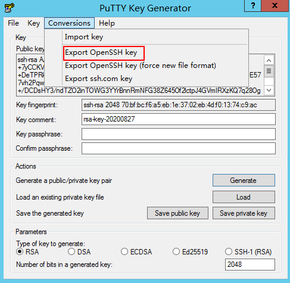

Scenarios
You can use PuTTYgen to create a key pair and store the public key and private key locally.

Key pairs created using puttygen.exe must be imported by referring to Importing a Key Pair before they are used.
Procedure
- Download and install PuTTY and PuTTYgen.
https://www.chiark.greenend.org.uk/~sgtatham/putty/latest.html
PuTTYgen is a key generator, which is used to create a key pair that consists of a public key and a private key for PuTTY.
- Obtain the public and private keys.
- Double-click puttygen.exe to open PuTTY Key Generator.Figure 1 PuTTY Key Generator

- Click Generate.
The key generator automatically generates a key pair that consists of a public key and a private key. The content shown in the red box in Figure 2 is the public key.
- Double-click puttygen.exe to open PuTTY Key Generator.
- Copy the public key to a .txt file and save it to a local directory.
Do not save the public key by clicking Save public key because this operation will change the format of the public key content and cause the public key to fail to be imported to the management console.
- Save the private key and keep it secure. The private key can be downloaded only once.
The format in which to save your private key file varies depending on application scenarios.
- When using PuTTY to log in to a Linux ECS:
- When using Xshell to log in to a Linux ECS or obtaining the password for logging in to a Windows ECS:Save the private key file in the .pem format.
- Choose Conversions > Export OpenSSH key.
If you use this private file to obtain the password for logging in to a Windows ECS, do not specify Key passphrase for Export OpenSSH key so that you can obtain the password successfully.
Figure 4 Saving a private key
 - Save the private key, for example, kp-123.pem, locally.
- Choose Conversions > Export OpenSSH key.
- After you have saved the key pair, import your public key to the ECS by referring to Importing a Key Pair.